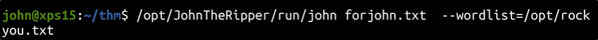

If you find some private keys like in (.ssh)

Copy that key to the local machine (Kali)
You can try to login with the keys with -i option

If it prompts for a password, you can try to crack the key with JohnTheRipper


Onec cracked, try to login again, with the password and the key: